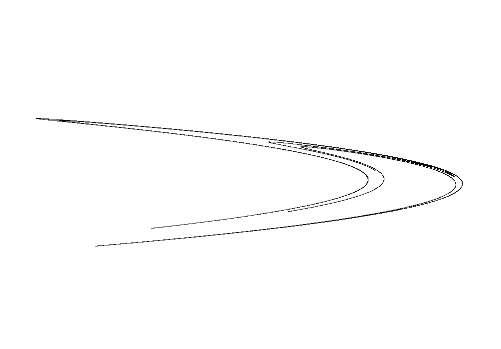

Fractal gallery
Henon Map
A point repeatedly folded and stretched until it draws an attractor.
Unlike escape-time fractals, the Henon map is drawn by following one moving point for many steps. The path does not fill a smooth region. It settles into a thin, strange set that is part curve, part dust.

What to try first
Increase the iteration count and watch the attractor become denser. This fractal is accumulated, not colored pixel by pixel.
Change \(\alpha\) or \(\beta\) gently. Small parameter changes can stretch the attractor, break it, or send the orbit away.
Look for the folded ribbon shape. That fold is the signature gesture of the map.
Mathematical notes
The map wxChaos iterates
wxChaos uses \(x_{n+1}=y_n+1-\alpha x_n^2\) and \(y_{n+1}=\beta x_n\). The parameter \(\alpha\) controls the nonlinear fold, while \(\beta\) controls how much the previous horizontal position returns as the new vertical position.
What makes an attractor strange?
An attractor gathers nearby orbits toward it. A strange attractor has fractal structure and sensitive dependence on initial conditions. The classic Henon attractor is often described as smooth in one direction and Cantor-like across the other.